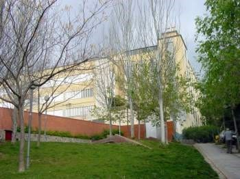
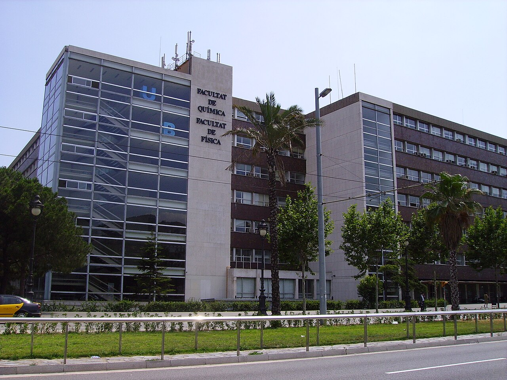
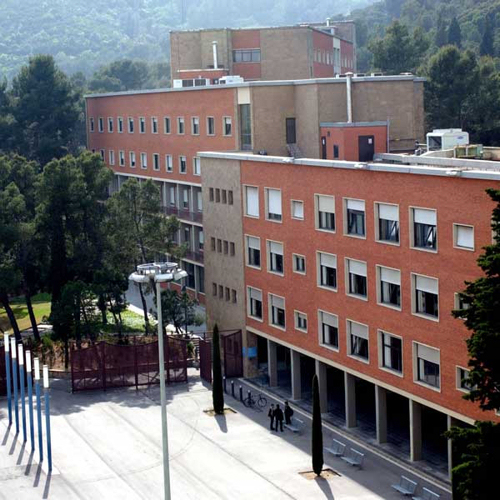
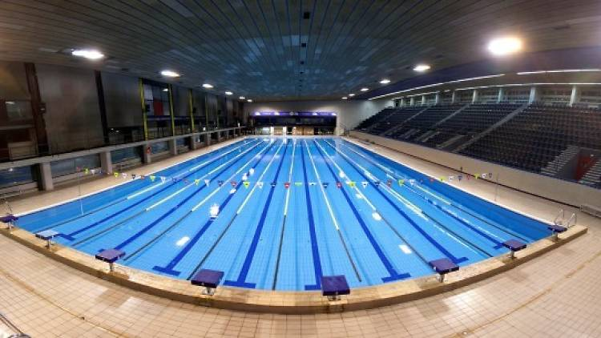
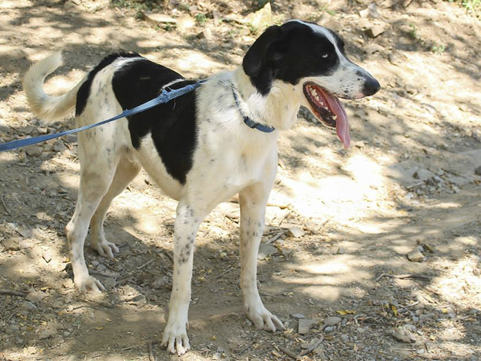
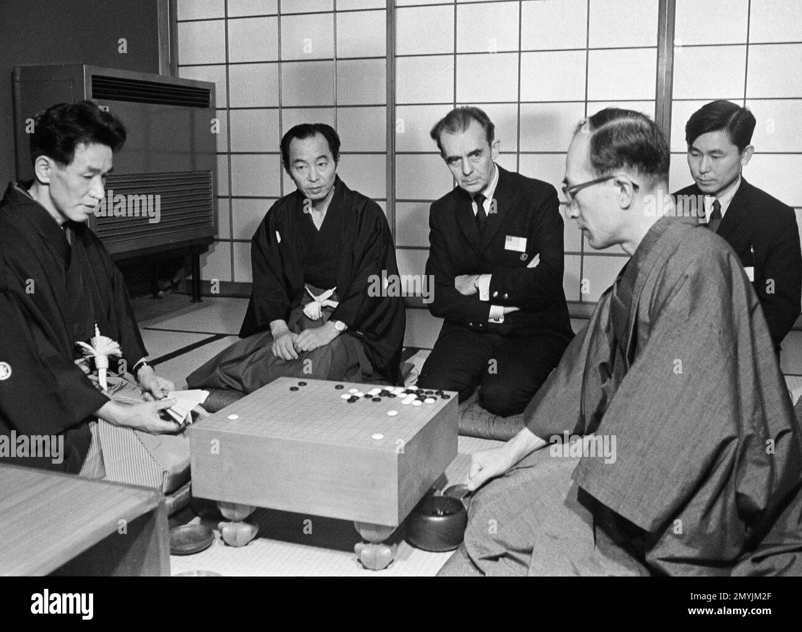
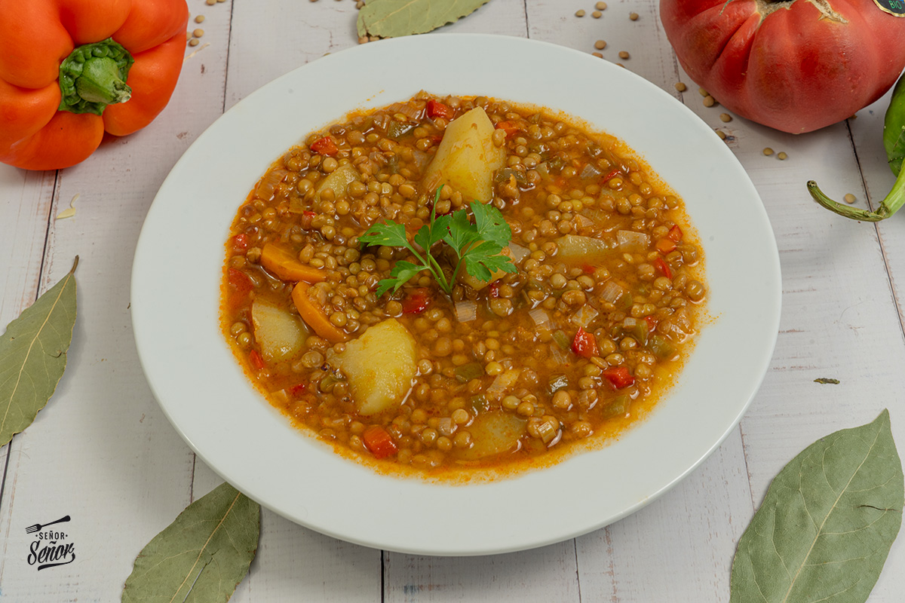
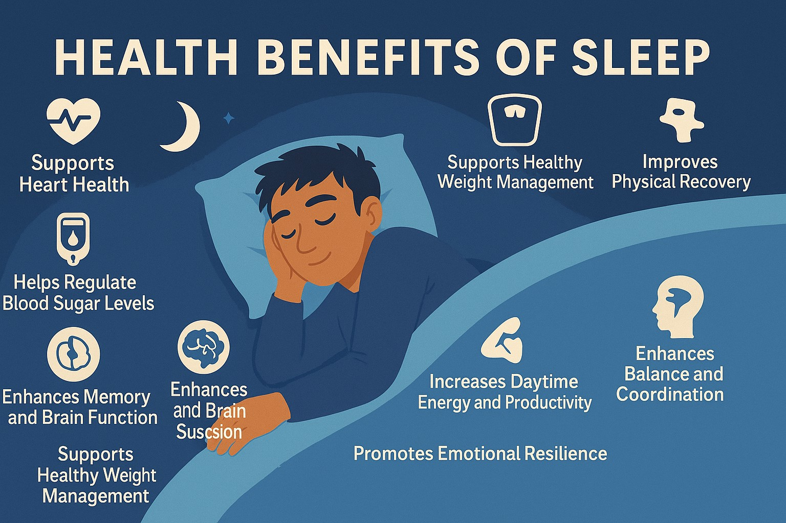
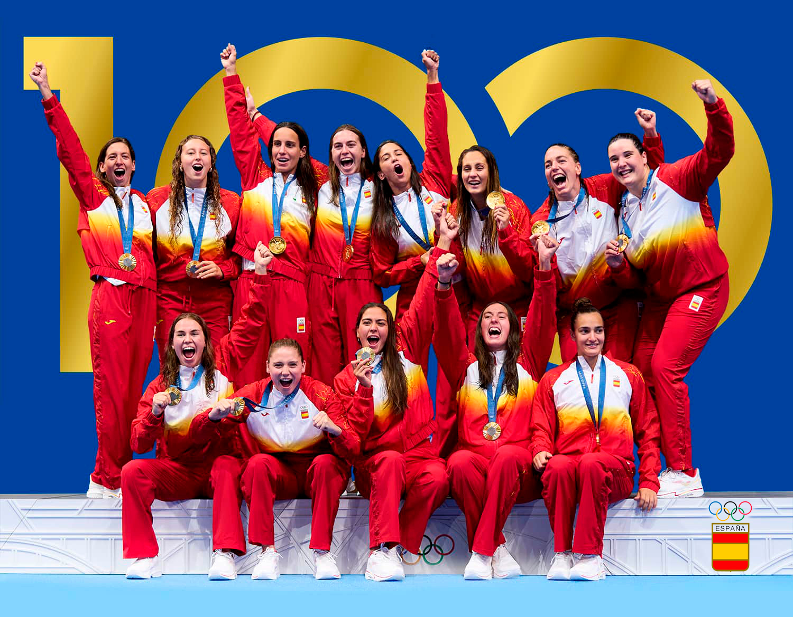

Presentación
Mi nombre es Gonzalo Bermejo Miranda, he visto ya 6 cambios de década, un cambio de siglo y otro de milenio (cronológicamente y en programas de Iker Jiménez también). Me dedico a enseñar y a aprender. Mis intereses se centran en la ciencia, la tecnología, la lingüística, la psicología, la primatología y los bichos en general. Podéis encontrar mis trabajos de investigación en ResearchGate, mientras que en mi canal de YouTube Hans_Eysenck podéis encontrar vídeos pedagógicos de diversos temas.
Mi trayectoria académica



Cursé mis estudios primarios en el ya desaparecido colegio Sant Jordi, y mis estudios de secundaria en el colegio Amor de Dios, obteniendo matrícula de honor en el antiguo COU, lo que me permitió tener el primer año de carrera gratis. Esa carrera (la primera de 2.1) fue física. En física aprendí muchas cosas, la primera fue que soy tan capaz de suspender un examen como cualquiera (uno y más de uno). Otra es que un cálculo integral puede ocupar varias páginas, pero la satisfacción de acabarlo es proporcional a su longitud. La tercera es que el Go en exceso es perjudicial para la salud!
Formación y Premios/Becas
Licenciatura en Física (UB, 2009) – Matrícula de Honor en COU y en Física Atómica.
Grado en Estudios Ingleses (UB, 2019) – 23 Matrículas de Honor y Premio Extraordinario de Grado.
CAP – Certificado de Aptitud Pedagógica (UB)
Máster en Lingüística Aplicada (UB, 2019-2021) – 6 Matrículas de Honor. Becas: Fundación “La Pedrera” a la excelencia académica, Beca general del Ministerio.
Doctorado en Ciencias Cognitivas (UB) – 2 años de investigación (inacabado). Becas: FI y FPU.
Becas y Premios adicionales: Premio-Beca Santander Progreso al mejor expediente académico antes de iniciar el Máster.
Trabajo y publicaciones
Aficiones
Sin que el orden signifique nada: 1. Deporte (cuando tengo tiempo) 2. Collserola (aunque no tenga tiempo) 3. Perros de la perrera (si voy sobrado de tiempo) 3. Mis alumnos (cuando los tengo, me quitan todo el tiempo) 4. Go (estoy intentando quitarme porque también me quita tiempo) 5. Comer (todo el tiempo) 6. Dormir (solo si me da tiempo) 7. Ver waterpolo (cuando es el tiempo)






Mi relación con los idiomas
Por una carambola del destino aprendí inglés de muy pequeño casi sin darme cuenta. Mis padres tenían una vecina galesa y venía algunas tardes a ocuparse de mí y de mi hermano y a darnos clase (aunque al principio yo tampoco lo experimentaba como algo escolar, con los años ya sí). Al haber aprendido inglés de manera tan poco meritoria, tan poco esforzada, me costaba ponerme en el lugar de mis alumnos de inglés (¿qué podía haber más fácil que hablar inglés? pensaba yo ingenuamente). Cambié la perspectiva cuando tuve que aprender francés de adulto, me enteré de que aprender un idioma de cero siendo adulto es complicado (novedad para mí!). Aún así llegué al B2 (nivel C1 en mi prime!) de manera algo anárquica y con métodos poco académicos (leyendo a Sartre y a Molière). Ahora con el alemán no me he llevado ninguna sorpresa, ya sabía que aprender un idioma era difícil (sehr schwer). Si vivo 40 años más me gustaría aprender chino y ruso (20 para cada uno).
Libros recomendados
Artículos
Próximamente compartiré aquí ensayos y reflexiones sobre ciencia, lenguaje, primates y otras cuestiones que probablemente no solucionen el mundo pero al menos lo complicarán con rigor.